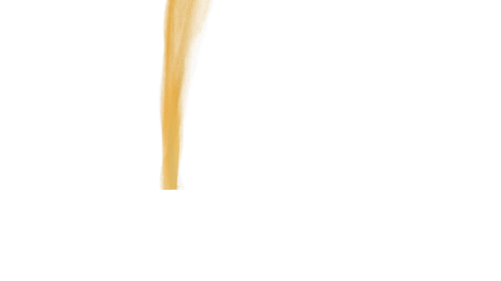
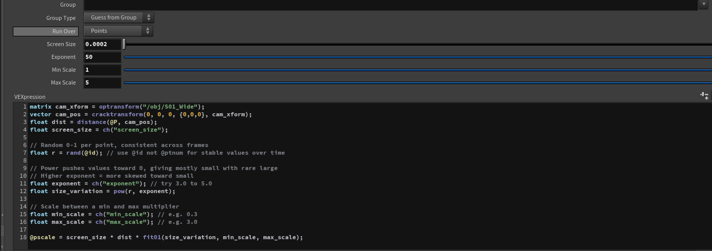

← 部落格 × Harbour × ETC


第 7 週
團隊成員
Yiqi Zheng（特效）
Riley Ho（特效）
Itim Kongsakulvatanasook（特效）
Sofia Mancias（合成）
2 月 23 日
Benji Hopkins（外觀開發）
SCAD × HARBOR × ETC － 第 7 週
大家好，這是我 SCAD × Harbor × ETC 部落格的第七週！
以下是週二簡報後導師們的回饋。
Kyle：
-
各鏡頭之間的粒子不一致
-
鏡頭 1 中印表機周圍地面上的效果可以更亮
-
調整粒子的調色，讓它們不要過曝，鏡頭 1 現在顏色都爆掉了
-
鏡頭 3 的光線變化很好，整個鏡頭都維持這樣的燈光
-
鏡頭 4 不需要那些物件，先專注在前面的鏡頭
Beck：
-
避免打任何關鍵影格，試著用時間或 age 來區分 pscale
-
可以根據攝影機視錐設定 pscale，也許用 wrangle
-
鏡頭 3 的粒子顏色和畫作不符，現在中間非常紅
-
粒子消失的效果好像發生了兩次，感覺很怪
待辦事項：
-
調整粒子的路徑與流動形狀（加入 noise）
-
為鏡頭 1 降噪
-
避免過曝。
這是我們第 7 週的預視。
鏡頭 2 需要拉長時間，目前感覺太快。有些色彩流也顯得太平，需要探索更多變化。
這週另一個重要進展是增加了模擬中的粒子數量，檔案大小也因此大幅增加。依照 Fowler 教授的建議，我研究了在 OBJ 層輸出 USD 並使用參照流程。輸出 USD 檔並參照後，場景效能大幅改善。
另外在鏡頭 2，我進一步研究粒子流的平滑度，但有些流看起來還是很平。

鏡頭 1 的部分，Itim 協助寫了 VEX，讓我們可以透過 age 和速度產生變化。
我也縮放了粒子的速度，以便控制模擬的速度、強度與整體動態。
因為我很希望粒子有更多變化，Riley 分享了這個 wrangle 給我。它會計算每個粒子與攝影機的距離，再結合一些隨機變化來控制粒子的 pscale（大小）。這能讓粒子在畫面上維持較一致的大小，同時加入自然的大小變化，在場景中看起來更平衡、更自然。
